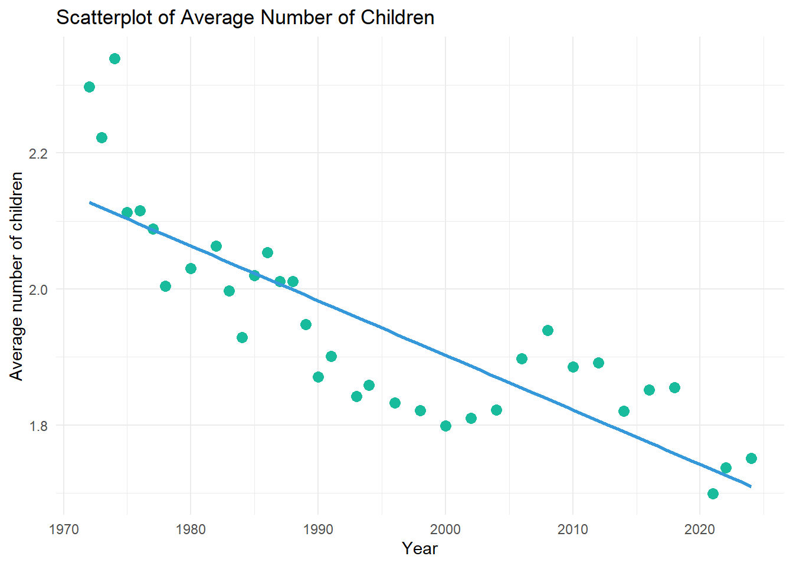
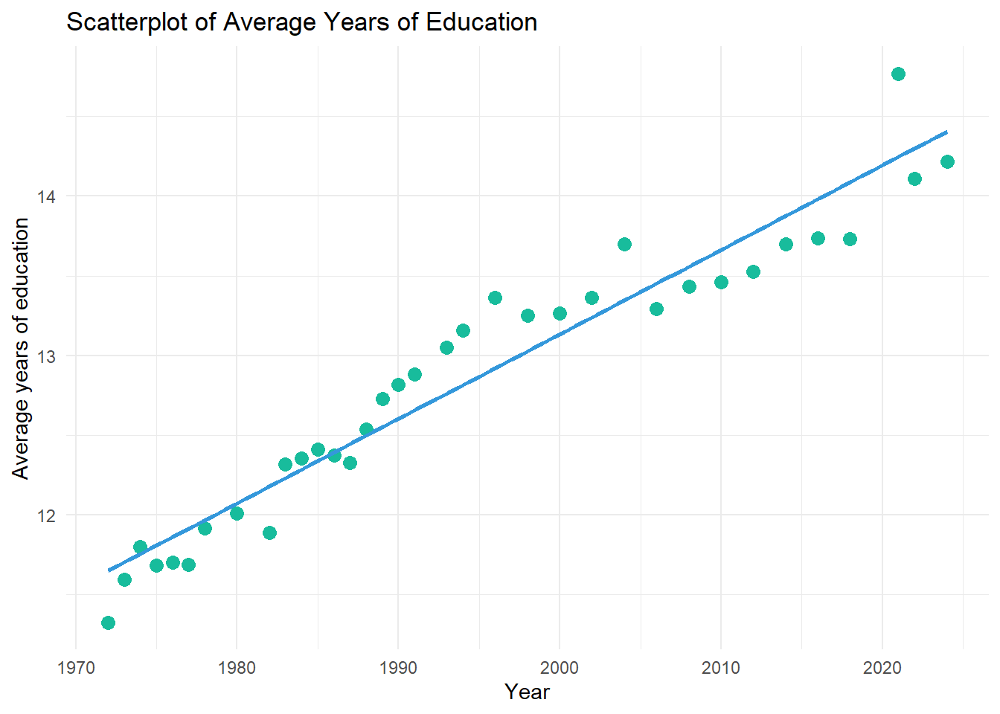
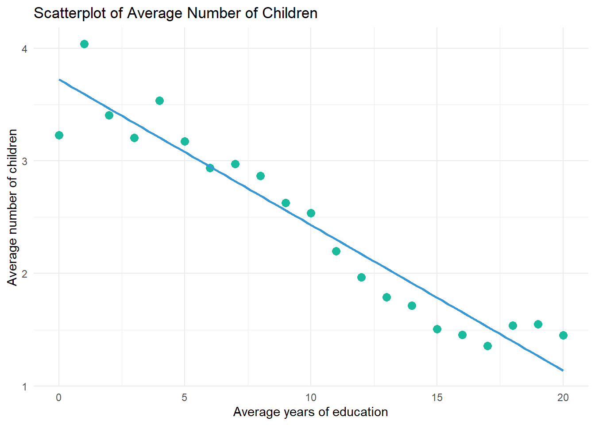
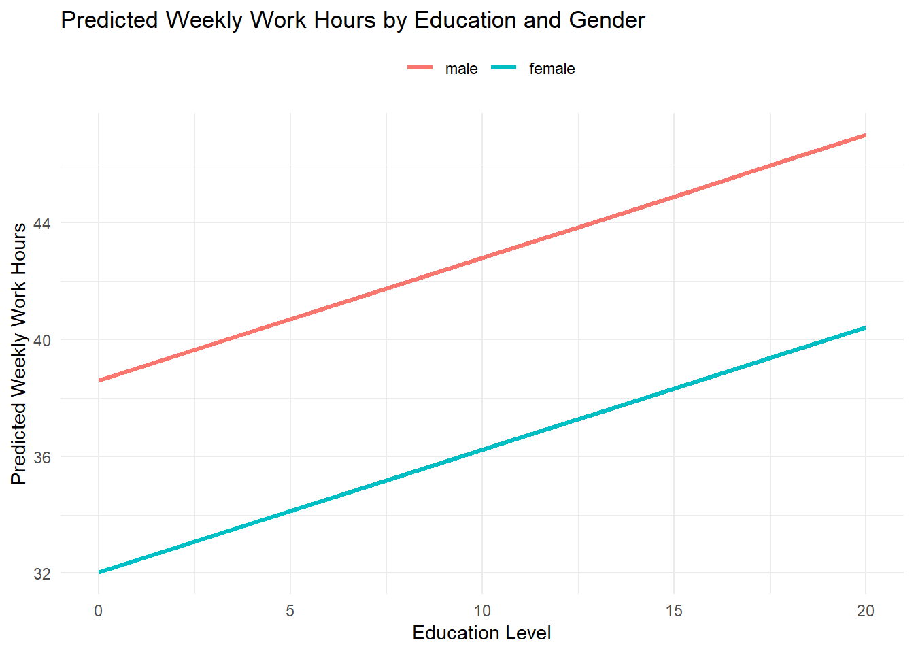
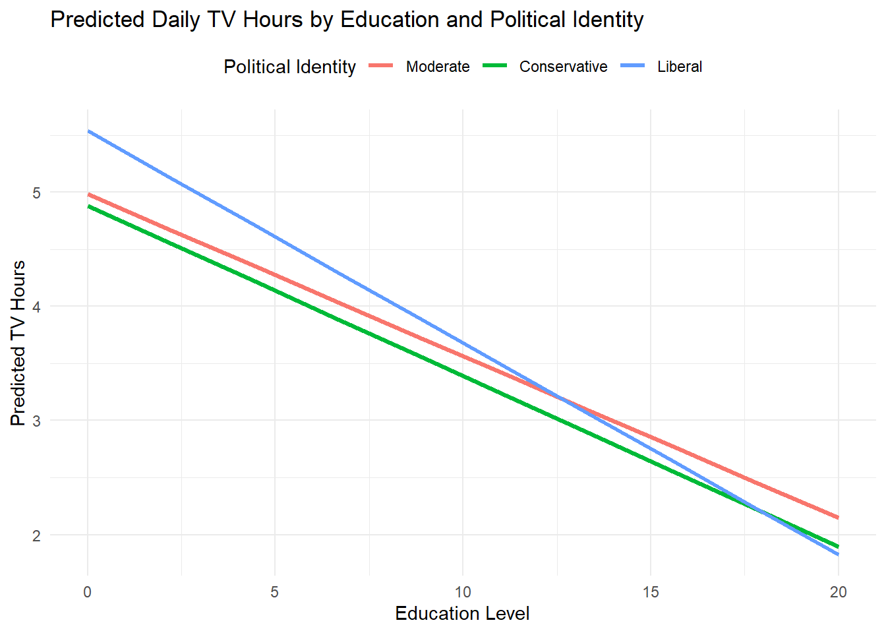

# install.packages("marginaleffects") # needed for modelbased
# install.packages("modelbased")
library(tidyverse)
library(haven) # not core tidyverse
library(gssr)
library(gssrdoc)
library(summarytools)
library(gtsummary)
library(moderndive)
library(modelbased)Code-along 09
Setup
Packages
Load the standard packages and new package modelbased.
Load your data
# Load all gss
data(gss_all)Make a df with only the (pretty) categorical and continuous variables we’ll analyze.
# Categorical Variables
my_cat <- gss_all |>
select(id, year, polviews, sex, marital) |>
zap_missing() |>
mutate(
polviews = as_factor(polviews),
sex = as_factor(sex),
marital = as_factor(marital)) |>
droplevels()
# Continuous Variables
my_con <- gss_all |>
select(id, year, tvhours, age, educ, hrs1, realrinc, childs) |>
mutate(
age = as.numeric(age),
educ = as.numeric(educ),
hrs1 = as.numeric(hrs1),
realrinc = as.numeric(realrinc),
childs = as.numeric(childs))
# Combine the two dataframes
my_data <- full_join(my_cat, my_con, by = c("year", "id")) # match by 2 varsTwo continuous variables
Have the average number of children changed over time?
# Create scatterplot with a regression line
my_data |>
group_by(year) |>
summarize(avg = mean(childs, na.rm = TRUE)) |>
ggplot(aes(x = year, y = avg)) +
geom_point(color = "#18BC9C", size = 3) +
geom_smooth(method = "lm", se = FALSE, color = "#3498DB") +
labs(
title = "Scatterplot of Average Number of Children",
x = "Year",
y = "Average number of children") +
theme_minimal()
Pearson’s Correlation (R)
cor.test(
~ childs + year,
data = my_data,
method = "pearson",
na.action = na.omit)
Pearson's product-moment correlation
data: childs and year
t = -18.896, df = 75405, p-value < 2.2e-16
alternative hypothesis: true correlation is not equal to 0
95 percent confidence interval:
-0.07575205 -0.06154441
sample estimates:
cor
-0.06865171 Simple Regression
model_01 <- lm(formula = childs ~ year, data = my_data)
get_regression_table(model_01)# A tibble: 2 × 7
term estimate std_error statistic p_value lower_ci upper_ci
<chr> <dbl> <dbl> <dbl> <dbl> <dbl> <dbl>
1 intercept 17.2 0.811 21.2 0 15.7 18.8
2 year -0.008 0 -18.9 0 -0.008 -0.007PRE Measure
Square R
my_test <- cor.test(
~ childs + year,
data = my_data,
method = "pearson",
na.action = na.omit
)
my_test$estimate^2 cor
0.004713057 Get \(r^2\)
model_01 <- lm(formula = childs ~ year, data = my_data)
get_regression_summaries(model_01)# A tibble: 1 × 9
r_squared adj_r_squared mse rmse sigma statistic p_value df nobs
<dbl> <dbl> <dbl> <dbl> <dbl> <dbl> <dbl> <dbl> <dbl>
1 0.005 0.005 3.07 1.75 1.75 357. 0 1 75407Are the trends explained by increases in education?
# Create scatterplot with regression line
my_data |>
group_by(year) |>
summarize(avg = mean(educ, na.rm = TRUE)) |>
ggplot(aes(x = year, y = avg)) +
geom_point(color = "#18BC9C", size = 3) +
geom_smooth(method = "lm", se = FALSE, color = "#3498DB") +
labs(
title = "Scatterplot of Average Years of Education",
x = "Year",
y = "Average years of education"
) +
theme_minimal()
# Create scatterplot with regression line
my_data |>
group_by(educ) |>
summarize(avg = mean(childs, na.rm = TRUE)) |>
ggplot(aes(x = educ, y = avg)) +
geom_point(color = "#18BC9C", size = 3) +
geom_smooth(method = "lm", se = FALSE, color = "#3498DB") +
labs(
title = "Scatterplot of Average Number of Children",
x = "Average years of education",
y = "Average number of children"
) +
theme_minimal()Warning: Removed 1 row containing non-finite outside the scale range
(`stat_smooth()`).Warning: Removed 1 row containing missing values or values outside the scale range
(`geom_point()`).
Multiple Regression
model_02 <- lm(formula = childs ~ year + educ, data = my_data)
get_regression_table(model_02)# A tibble: 3 × 7
term estimate std_error statistic p_value lower_ci upper_ci
<chr> <dbl> <dbl> <dbl> <dbl> <dbl> <dbl>
1 intercept 5.26 0.813 6.47 0 3.66 6.85
2 year -0.001 0 -2.00 0.045 -0.002 0
3 educ -0.131 0.002 -64.5 0 -0.134 -0.127PRE Measure
get_regression_summaries(model_02)# A tibble: 1 × 9
r_squared adj_r_squared mse rmse sigma statistic p_value df nobs
<dbl> <dbl> <dbl> <dbl> <dbl> <dbl> <dbl> <dbl> <dbl>
1 0.057 0.057 2.90 1.70 1.70 2266. 0 2 75166tbl_regression()
model_02 |>
tbl_regression(intercept = TRUE) | Characteristic | Beta | 95% CI | p-value |
|---|---|---|---|
| (Intercept) | 5.3 | 3.7, 6.9 | <0.001 |
| GSS year for this respondent | 0.00 | 0.00, 0.00 | 0.045 |
| educ | -0.13 | -0.13, -0.13 | <0.001 |
| Abbreviation: CI = Confidence Interval | |||
model_02 |>
tbl_regression(
intercept = TRUE) |>
modify_column_hide(conf.low) |>
modify_column_unhide(column = std.error) | Characteristic | Beta | SE | p-value |
|---|---|---|---|
| (Intercept) | 5.3 | 0.813 | <0.001 |
| GSS year for this respondent | 0.00 | 0.000 | 0.045 |
| educ | -0.13 | 0.002 | <0.001 |
| Abbreviations: CI = Confidence Interval, SE = Standard Error | |||
OLS Regression predicting number of children by survey year and years of education
model_02 |>
tbl_regression(
intercept = TRUE) |>
modify_column_hide(conf.low) |>
modify_column_unhide(column = std.error) |>
remove_abbreviation() |>
add_significance_stars() |>
add_glance_table(include = c("r.squared", "nobs"))| Characteristic | Beta1 | SE |
|---|---|---|
| (Intercept) | 5.3*** | 0.813 |
| GSS year for this respondent | 0.00* | 0.000 |
| educ | -0.13*** | 0.002 |
| R² | 0.057 | |
| No. Obs. | 75,166 | |
| 1 p<0.05; p<0.01; p<0.001 | ||
1 continuous variable & 1 categorical variable
Are weekly hours worked related to education and gender?
model <- lm(hrs1 ~ educ + sex, data = my_data)
get_regression_table(model)# A tibble: 3 × 7
term estimate std_error statistic p_value lower_ci upper_ci
<chr> <dbl> <dbl> <dbl> <dbl> <dbl> <dbl>
1 intercept 38.6 0.32 121. 0 38.0 39.2
2 educ 0.42 0.022 18.7 0 0.376 0.464
3 sex: female -6.58 0.132 -49.9 0 -6.83 -6.32 model |>
tbl_regression(
intercept = TRUE) |>
modify_column_hide(conf.low) |>
modify_column_unhide(
column = std.error) |>
remove_abbreviation() |>
add_significance_stars() |>
add_glance_table(
include = c("r.squared", "nobs"))| Characteristic | Beta1 | SE |
|---|---|---|
| (Intercept) | 39*** | 0.320 |
| educ | 0.42*** | 0.022 |
| sex | ||
| male | — | — |
| female | -6.6*** | 0.132 |
| R² | 0.061 | |
| No. Obs. | 43,167 | |
| 1 p<0.05; p<0.01; p<0.001 | ||
OLS Regression predicting weekly work hours by years of education and gender
model |>
tbl_regression(
intercept = TRUE,
show_single_row = sex,
label = list(sex = "Women")) |>
modify_column_hide(conf.low) |>
modify_column_unhide(
column = std.error) |>
remove_abbreviation() |>
add_significance_stars() |>
add_glance_table(
include = c("r.squared", "nobs"))| Characteristic | Beta1 | SE |
|---|---|---|
| (Intercept) | 39*** | 0.320 |
| educ | 0.42*** | 0.022 |
| Women | -6.6*** | 0.132 |
| R² | 0.061 | |
| No. Obs. | 43,167 | |
| 1 p<0.05; p<0.01; p<0.001 | ||
estimate_means()
R calculates the mean values of every variable in the model except sex, and sets all of those variables equal to their means. Then (once again) it sets female = 0 in every observation, calculates predicted probabilities for each individual, and averages those.
Then it goes back and resets female to 1 in every observation, again calculates predicted probabilities for each individual and outputs the average of those.
Outputs can be interpreted as the predicted probabilities for women and men if they were all average in all other respects.
# Get predicted values
preds <- estimate_means(model, by = c("sex"))
# Preview the new df
preds |>
as_tibble() |>
head()# A tibble: 2 × 7
sex Mean SE CI_low CI_high t df
<fct> <dbl> <dbl> <dbl> <dbl> <dbl> <int>
1 male 44.4 0.0923 44.2 44.5 480. 43164
2 female 37.8 0.0939 37.6 38.0 402. 43164# Get predicted values
preds <- estimate_means(model, by = c("educ", "sex"))
# Preview the new df
preds |>
as_tibble() |>
head()men with 0 years of education = \(38.601 + .420_{educ}*0\)
women with 0 years of education \(38.601 + .420_{educ}*0 -6.576_{female}\)
men with 2.222 years of education \(38.601 + .420_{educ}*2.222\)
women with 2.222 years of education \(38.601 + .420_{educ}*2.222-6.576_{female}\)
Visualize the predictions:
# Get predicted values
preds <- estimate_means(model, by =c("educ", "sex"))
# Plot using ggplot2
preds |>
ggplot(aes(x = educ, y = Mean, color = sex)) +
geom_line(linewidth = 1.2) +
labs(
title = "Predicted Weekly Work Hours by Education and Gender",
x = "Education Level",
y = "Predicted Weekly Work Hours",
color = " ") +
theme_minimal() +
theme(legend.position = "top")
Are weekly hours worked related to education and marital status?
model <- lm(hrs1 ~ educ + marital, data = my_data)
get_regression_table(model)# A tibble: 6 × 7
term estimate std_error statistic p_value lower_ci upper_ci
<chr> <dbl> <dbl> <dbl> <dbl> <dbl> <dbl>
1 intercept 36.5 0.33 110. 0 35.9 37.1
2 educ 0.378 0.023 16.4 0 0.333 0.424
3 marital: widowed -5.94 0.385 -15.4 0 -6.70 -5.19
4 marital: divorced 0.605 0.198 3.06 0.002 0.218 0.993
5 marital: separated -0.278 0.379 -0.733 0.464 -1.02 0.465
6 marital: never married -1.76 0.163 -10.8 0 -2.08 -1.44 Regression Predicting Weekly Work Hours by Years of Education and Marital Status
model |>
tbl_regression(
intercept = TRUE,
label = list(
marital = "Marital status (ref. = married)")) |>
remove_row_type(type = c("reference")) |>
modify_column_hide(conf.low) |>
modify_column_unhide(
column = std.error) |>
remove_abbreviation() |>
add_significance_stars() |>
add_glance_table(
include = c("r.squared", "nobs"))| Characteristic | Beta1 | SE |
|---|---|---|
| (Intercept) | 37*** | 0.330 |
| educ | 0.38*** | 0.023 |
| Marital status (ref. = married) | ||
| widowed | -5.9*** | 0.385 |
| divorced | 0.61** | 0.198 |
| separated | -0.28 | 0.379 |
| never married | -1.8*** | 0.163 |
| R² | 0.015 | |
| No. Obs. | 43,178 | |
| 1 p<0.05; p<0.01; p<0.001 | ||
Are daily TV hours related to education and political identity?
my_data <- my_data %>%
mutate(pol_group = case_when(
polviews %in% c("extremely liberal", "liberal", "slightly liberal") ~ "Liberal",
polviews == "moderate, middle of the road" ~ "Moderate",
polviews %in% c("slightly conservative", "conservative", "extremely conservative") ~ "Conservative",
TRUE ~ NA_character_))
model <- lm(tvhours ~ educ + pol_group, data = my_data)
get_regression_table(model)# A tibble: 4 × 7
term estimate std_error statistic p_value lower_ci upper_ci
<chr> <dbl> <dbl> <dbl> <dbl> <dbl> <dbl>
1 intercept 5.00 0.056 89.1 0 4.89 5.12
2 educ -0.159 0.004 -40.4 0 -0.166 -0.151
3 pol_group: Liberal 0.157 0.031 5.15 0 0.097 0.217
4 pol_group: Moderate 0.192 0.028 6.76 0 0.136 0.247relevel()
# Relevel pol_group so "Moderate" is the reference
my_data$pol_group <- relevel(factor(my_data$pol_group),
ref = "Moderate")
model <- lm(tvhours ~ educ + pol_group, data = my_data)
get_regression_table(model)# A tibble: 4 × 7
term estimate std_error statistic p_value lower_ci upper_ci
<chr> <dbl> <dbl> <dbl> <dbl> <dbl> <dbl>
1 intercept 5.20 0.054 96.4 0 5.09 5.30
2 educ -0.159 0.004 -40.4 0 -0.166 -0.151
3 pol_group: Conservative -0.192 0.028 -6.76 0 -0.247 -0.136
4 pol_group: Liberal -0.035 0.03 -1.15 0.25 -0.093 0.024Does the relationship between TV hours and education differ by political identity?
model <- lm(tvhours ~ educ * pol_group, data = my_data)
get_regression_table(model)# A tibble: 6 × 7
term estimate std_error statistic p_value lower_ci upper_ci
<chr> <dbl> <dbl> <dbl> <dbl> <dbl> <dbl>
1 intercept 4.98 0.088 56.5 0 4.81 5.16
2 educ -0.142 0.007 -21.1 0 -0.155 -0.129
3 pol_group: Conservative -0.1 0.128 -0.781 0.435 -0.351 0.151
4 pol_group: Liberal 0.553 0.132 4.20 0 0.295 0.811
5 educ:pol_groupConserva… -0.008 0.01 -0.787 0.431 -0.026 0.011
6 educ:pol_groupLiberal -0.044 0.01 -4.55 0 -0.063 -0.025The coefficient for educ is $-0.142 $, meaning that for moderates (the reference group), each additional year of education is associated with -0.142 fewer tv hours per day.
The coefficient for pol_group: Conservative is \(-0.1\). This is the difference in the outcome between moderates and conservatives when education = 0. Conservatives watch -0.1 TV hours per day fewer than moderates when education is zero. Not statistically significantly different.
The interaction term educ:pol_groupConservative is \(-0.008\). It tells us whether the relationship between education and TV hours differs between moderates and conservatives It adjusts the slope of education for conservatives So for conservatives, the effect of education is:
\(-0.142 -0.008 = -0.15\)
This means that for conservatives, each additional unit of education is associated with only \(-0.15\) fewer daily TV hours.
Visualize predictions:
# Get predicted values
preds <- estimate_means(model, by = c("educ", "pol_group"))
# Plot using ggplot2
preds |>
ggplot(aes(x = educ, y = Mean, color = pol_group)) +
geom_line(linewidth = 1.2) +
labs(
title = "Predicted Daily TV Hours by Education and Political Identity",
x = "Education Level",
y = "Predicted TV Hours",
color = "Political Identity") +
theme_minimal() +
theme(legend.position = "top")